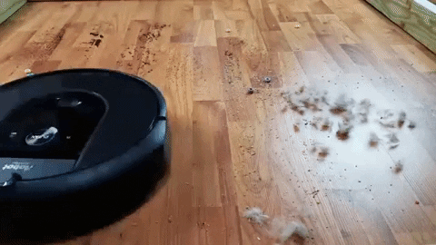
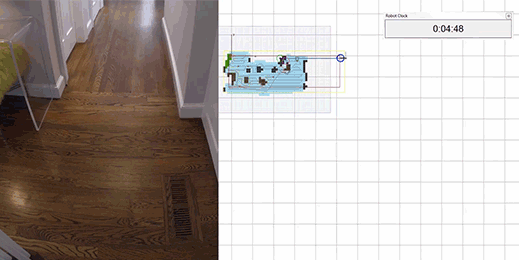
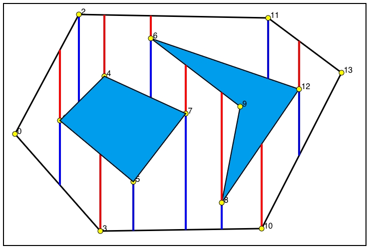
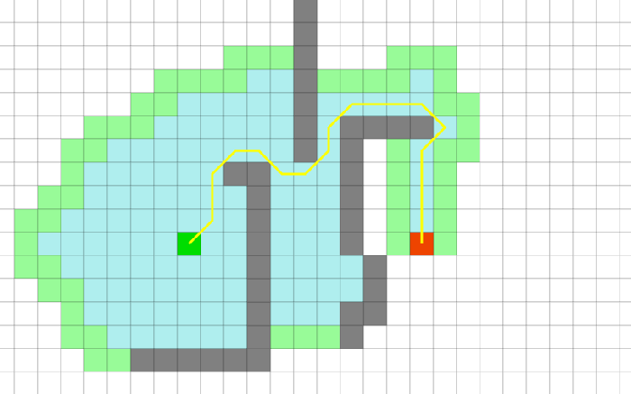

Second Part of Coverage Algortihms. This post discusses how to generate and implement a general coverage algorithm using self localization. Make sure to visit the first part to understand the basics of coverage algorithms, before reading on!

Roomba on Job
A Commercial Coverage Algorithm
The Roomba 980, one of the most advanced vacuum cleaner robot is a good way to understand what a good coverage algorithm should be composed of! By using a camera, the robot captures the images of a room, and gradually builds the map of it’s surroundings and determines it’s location, a technique called SLAM(Simulataneous Localization and Mapping). Being able to implement SLAM in such a small system is a remarkable work done by iRobot. In order to gain better accuracy, the Robot combines the data from proximity sensors with the camera, a technique which is called sensor fusion.

Simultaneous Localization and Mapping
As can be seen, Localization is an essential competency required by an autonomous robot, as using it’s own location, the robot can make decisions about future actions. Using the power of localization in our code enables us to accurately determine the robot’s return path and it’s next step.
As discussed in the previous post, a coverage algorithm is composed of 3 main components:
- Decomposition of Region
- Sweep Algorithm
- Backtracking
Let’s look at them one by one:
Decomposition of Region
Decomposition of Region involves breaking down the complete map into smaller parts. Any efficient decomposition would work here. Trapezoidal Decomposition, Rectangular Decomposition, Complementary Region Decomposition to name a few. A very simple decomposition algorithm would be ‘Boustrophedon Decomposition’ Algorithm.

Trapezoidal Cellular Decomposition
The algorithm is simple in the sense that it involves no preprocessing task, and can be operated online. Implementation wise, while the robot is moving in the environment under the Sweep Algorithm, the robot needs to save all the vacant spaces it encounters surrounding it. Once, the robot reaches a point where it cannot move any further(considering that the robot cannot cross the obstacle, and cannot go to already visited spaces), the robot may enter the next segment to begin coverage.
#Returns a number based on whether the cell is free, has an obstacle, or is already covered
def checkCell(self, cell):
obstacle = 0
virtualObst = 0 #already covered path
c = None
if cell[0] != None and cell[1] != None:
if self.mapE[cell] == 0:
#obstacle
obstacle = 1
elif self.mapE[cell] == 1:
#already covered path
virtualObst = 1
if obstacle == 1:
c = 1
elif virtualObst == 1:
c = 2
else:
c = 0
return c
#Checks the neighboring cells of the current cell
def checkNeigh(self, neighbors):
north = neighbors[0]
northCell = self.checkCell(north)
east = neighbors[1]
eastCell = self.checkCell(east)
west = neighbors[2]
westCell = self.checkCell(west)
south = neighbors[3]
southCell = self.checkCell(south)
cells = [northCell, eastCell, westCell, southCell]
return cells
#Checks whether the neighbors are worth saving to our list
def isReturnPoint(self, cells):
nCell = cells[0]
eCell = cells[1]
wCell = cells[2]
sCell = cells[3]
if nCell == 0 :
self.savePoint(self.currentCell)
if eCell == 0:
self.savePoint(self.currentCell)
if wCell == 0:
self.savePoint(self.currentCell)
if sCell == 0:
self.savePoint(self.currentCell)
Sweep Algorithm
The Sweep Algorithm determines the way the robot would cover a segment of the map. Random Motion, Spiral Motion, Boustrophedon Motion are some of the ways by which we can cover a segment. An implementation of zig zag motion would be:
def zigzag(self, cells, neighbors):
nCell = cells[0]
eCell = cells[1]
wCell = cells[2]
sCell = cells[3]
north = neighbors[0]
east = neighbors[1]
west = neighbors[2]
south = neighbors[3]
#If not going south
if self.goSouth == False:
#North Cell is empty
if nCell == 0:
self.nextCell = north
#North Cell not empty
else:
#South Cell empty
if sCell == 0:
self.nextCell = south
self.goSouth = True
#East Cell empty
elif eCell == 0:
self.nextCell = east
self.goSouth = True
#West Cell empty
elif wCell == 0:
self.nextCell = west
self.goSouth = True
#If going south
else:
#South Cell empty
if sCell == 0:
self.nextCell = south
#South Cell not empty
else:
self.goSouth = False
Backtracking
Backtracking involves the plan for moving from one region to another. It is an essential part to our coverage algorithm. A good backtracking algorithm reduces the time of travel between two subregions. Some examples would be Naive Backtracking, A* or Visibility Algorithm. An implementation of A* algorithm would be:

A Star Path Finding Algorithm
#Cell is the current point, and returnPoint is the destination
def astar(self, cell, returnPoint, neighbors):
# Initialize both open and closed list
open_list = []
closed_list = []
# Add the start node
open_list.append(cell)
# Loop until you find the end
while len(open_list) > 0:
# Get the node with smallest f from open_list
current_node = open_list[0]
current_index = 0
for index, item in enumerate(open_list):
if item.f < current_node.f:
current_node = item
current_index = index
# Pop it off open list, add to closed list
open_list.pop(current_index)
closed_list.append(current_node)
# If the goal is found
if current_node == returnPoint:
path = []
current = current_node
while current is not None:
path.append(current.position)
current = current.parent
return path[::-1] # Return reversed path
# Generate children
children = []
for new_position in neighbors: # Neighboring squares
# Make sure the neighbor is free
if map[new_position] != 0:
continue
# Append
children.append(new_position)
# Loop through children
for child in children:
# Child is on the closed list
for closed_child in closed_list:
if child == closed_child:
continue
# Create the f, g, and h values
child.g = current_node.g + 1
child.h = ((child.position[0] - end_node.position[0]) ** 2) + ((child.position[1] - end_node.position[1]) ** 2)
child.f = child.g + child.h
# Child is already in the open list
for open_node in open_list:
if child == open_node and child.g > open_node.g:
continue
# Add the child to the open list
open_list.append(child)
Please find the code here
Hence, by reconfiguring and adjusting the three parts of our algorithm, we can design any complex or simple coverage algorithm.